1008A46 cam shaft left rigid mount - r r
- Path
- Procedures > 10 ENGINE > 1008 POWER UNIT SUPPORTS > 1008A power unit fastenings > 1008A46 cam shaft left rigid mount - r r
- Kind
- repair procedure (removal / refitting; the operation number is the code)
- Applies to
- engines: 1.6 TS , 1.8 TS, 2.0 JTS, 2.5 V6, 3.2 V6, 1.9 JTD 8v , 1.9 JTD 16v, 2.0 JTS, 2.4 JTD 10v, 2.4 JTD 20v; all production periods
- Interactive page
- https://sloeber94.github.io/elrnDB-a156/en/#/3237447
Applies to: engines: 2.5 V6, 3.2 V6; all production periods
 Removing
Removing
 Refitting
RefittingPosition the vehicle on the ramp.
7055B54 under-engine guard - r r
1092G10 single engine belt r r
Drain the coolant
5040A10 Air conditioning refrigerant CIRCUIT - Draining and Refilling
5040A20 air conditioner compressor - r+r - includes fluid level check and top up if necessary
1. Undo the nuts (1a) and (1b), then remove the timing side rigid engine support (1c).
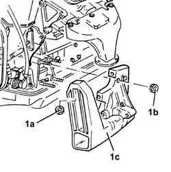
Applies to: engines: 2.5 V6, 3.2 V6; all production periods
Refitting
Removing1. Fit the timing side rigid engine support (1a) and fix it tightening the nuts (1b) and (1c) to the recommended torque.
 | Fastening | Component | Ø | Value (daNm) |
|---|---|---|---|---|
1b | Nut | ENGINE MOUNT TIMING SIDE | M10 | 4.2 - 5.2 |
| Fastening | Component | Ø | Value (daNm) |
|---|---|---|---|---|
1c | Nut | ENGINE MOUNT TIMING SIDE | M8 | 1.9 - 2.3 |
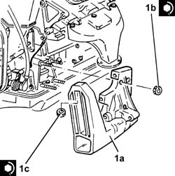
Applies to: engines: 2.5 V6, 3.2 V6; all production periods
5040A20 air conditioner compressor - r+r - includes fluid level check and top up if necessary
5040A10 Air conditioning refrigerant CIRCUIT - Draining and Refilling
1092G10 single engine belt r r
7055B54 under-engine guard - r r
Remove the vehicle from the ramp.
Applies to: engines: 1.6 TS , 1.8 TS; all production periods
Removing
RefittingPlace the car on a hoist.
Raise the car.
4450B10 Front WHEEL (one) - R.R.
7055B54 under-engine guard - r r
7055B64 Engine compartment DUST shield in front wheel arch (one), left or right - R.R.
Place a hydraulic jack under the engine.
1. Unscrew screws (1a) and (1b) and remove the camshaft left rigid mount (1c).
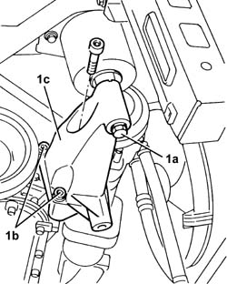
Applies to: engines: 1.6 TS , 1.8 TS; all production periods
Refitting
RemovingAssemble the camshaft left rigid mount and fasten it to the engine; tighten the screws to the specified torque.
| Fastening | Component | Ø | Value (daNm) |
|---|---|---|---|---|
- | Bolt | ENGINE MOUNT TIMING SIDE | M12 | 4.5 - 6.5 |
Tighten the screw fastening the camshaft left rigid mount to the flexible block to specified torque
| Fastening | Component | Ø | Value (daNm) |
|---|---|---|---|---|
- | Bolt | ENGINE MOUNT TIMING SIDE | M12 | 7.5 - 9.2 |
Remove the hydraulic jack from under the engine.
7055B64 Engine compartment DUST shield in front wheel arch (one), left or right - R.R.
7055B54 under-engine guard - r r
4450B10 Front WHEEL (one) - R.R.
Lower the car.
Remove the car from the hoist.
Applies to: engines: 2.0 JTS, 2.0 JTS; all production periods
Removing
RefittingPosition the vehicle on the ramp.
Proceed with removal 4450B04 right front wheel r r .
Proceed with removal 7055B54 under-engine guard - r r .
1. Remove the buttons (1a), undo the attachments (1b) and remove the front right wheelarch mudguard (1c).
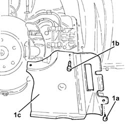
Applies to: engines: 2.0 JTS, 2.0 JTS; all production periods
1. Undo the nut (1a) and remove the brackets (1b) securing the power steering pipes.
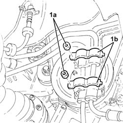
Applies to: engines: 2.0 JTS, 2.0 JTS; all production periods
Position a hydraulic jack under the engine.
1. Undo the bolts (1a) and (1b), then remove the timing side rigid engine support (1c).
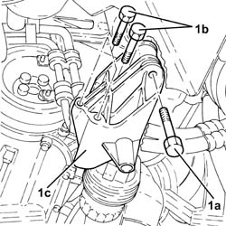
Applies to: engines: 2.0 JTS, 2.0 JTS; all production periods
Refitting
Removing1. Refit the timing side rigid engine support (1a) and secure it tightening the bolts (1b) and (1c) to the recommended torque.
| Fastening | Component | Ø | Value (daNm) |
|---|---|---|---|---|
1b | Bolt | ENGINE MOUNT TIMING SIDE | M10 | (Crankcase side) 4.5 ÷ 5.5 |
| Fastening | Component | Ø | Value (daNm) |
|---|---|---|---|---|
1c | Bolt | ENGINE MOUNT TIMING SIDE | M12 | (Flexible mounting side) 7.9 ÷ 9.7 |
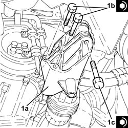
Applies to: engines: 2.0 JTS, 2.0 JTS; all production periods
Remove the hydraulic jack from under the engine.
Fit the brackets securing the power steering pipes in their seatings and secure them with their nuts.
Place the right front wheel housing dust protection back in its housing and secure it using the fastenings and buttons.
Proceed with refitting 7055B54 under-engine guard - r r .
Proceed with refitting 4450B04 right front wheel r r .
Remove the car from the ramps.
Applies to: engines: 1.9 JTD 8v ; all production periods
Removing
Refitting4450B10 Front WHEEL (one) - R.R.
7055B64 Engine compartment DUST shield in front wheel arch (one), left or right - R.R.
1092G10 single engine belt r r
1092A12 crankshaft pulley - r+r for versions with air conditioner
1. Position a hydraulic jack under the engine.
2. Undo the bolts (2a) and remove the timing side power unit rigid rear support (2b).
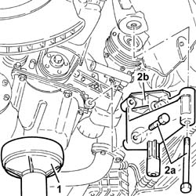
Applies to: engines: 1.9 JTD 8v ; all production periods
Refitting
RemovingFit the timing side power unit rigid rear support and fix it tightening the bolts to the recommended torque.
| Fastening | Component | Ø | Value (daNm) |
|---|---|---|---|---|
- | Bolt | ENGINE MOUNT TIMING SIDE | M12 | 4.2 - 5.2 |
| Fastening | Component | Ø | Value (daNm) |
|---|---|---|---|---|
- | Bolt | ENGINE MOUNT TIMING SIDE | M10 | 4.2 - 5.2 |
Remove the hydraulic jack from under the engine.
1092A12 crankshaft pulley - r+r for versions with air conditioner
1092G10 single engine belt r r
7055B64 Engine compartment DUST shield in front wheel arch (one), left or right - R.R. A
Applies to: engines: 2.4 JTD 10v; all production periods
Removing
Refitting4450B10 Front WHEEL (one) - R.R.
7055B64 Engine compartment DUST shield in front wheel arch (one), left or right - R.R.
1092G10 single engine belt r r
Position a hydraulic jack under the gearbox.
Loosen the upper bolts for the air conditioning compressor mounting.
1. Undo the bolt securing the timing side power unit rigid support to the flexible mounting.
2. Undo the lower bolts for the air conditioning compressor mounting.
3. Undo the remaining bolts (3a) and remove the timing side power unit rigid support (3b).
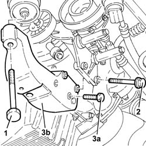
Applies to: engines: 2.4 JTD 10v; all production periods
Refitting
Removing1. Fit the timing side power unit rigid support (1a) and fix it tightening the bolts (1b) to the recommended torque.
| Fastening | Component | Ø | Value (daNm) |
|---|---|---|---|---|
1b | Bolt | ENGINE MOUNT TIMING SIDE | M10 | 4.2 - 5.2 |
2. Tighten the lower bolts for the air conditioning compressor support.
3. Tighten the timing side power unit rigid support bolt to the recommended torque.
| Fastening | Component | Ø | Value (daNm) |
|---|---|---|---|---|
3 | Bolt | ENGINE MOUNT TIMING SIDE | M12 | 7.5 - 9.2 |
Tighten the upper air conditioning compressor mounting bolts.
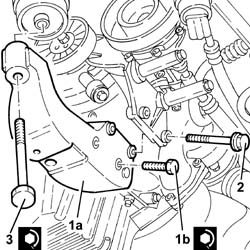
Applies to: engines: 2.4 JTD 10v; all production periods
Remove the hydraulic jack from under the gearbox.
1092G10 single engine belt r r
7055B64 Engine compartment DUST shield in front wheel arch (one), left or right - R.R.
Applies to: engines: 1.9 JTD 16v; all production periods
Removing
RefittingPosition the vehicle on the ramp.
Proceed with removal 4450B04 right front wheel r r .
Proceed with removal 7055B54 under-engine guard - r r .
Proceed with removal - 7055B91 Right front WHEEL ARCH LINER - R.R. .
Proceed with removal 1092G10 single engine belt r r .
Proceed with removal 1092A10 Crankshaft services PULLEY - R.R. .
Position a hydraulic jack under the engine.
1. Undo the bolt securing timing side rigid engine support to the flexible mounting.
2. Undo the bolts (2a) and remove the timing side rigid engine support (2b).
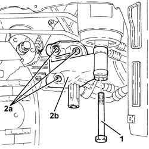
Applies to: engines: 1.9 JTD 16v; all production periods
Refitting
Removing1. Refit the timing side rigid engine support (1a) and secure it tightening the bolts (1b) to the recommended torque.
| Fastening | Component | Ø | Value (daNm) |
|---|---|---|---|---|
1b | Bolt | ENGINE MOUNT TIMING SIDE | M10 | (Crankcase side) 4.5 ÷ 5.5 |
2. Tighten the bolt securing timing side rigid engine support to the flexible mounting to the recommended torque.
| Fastening | Component | Ø | Value (daNm) |
|---|---|---|---|---|
2 | - | - | - | - |
Remove the hydraulic jack from under the engine.
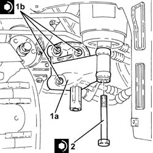
Applies to: engines: 1.9 JTD 16v; all production periods
Proceed with refitting 1092A10 Crankshaft services PULLEY - R.R. .
Proceed with refitting 1092G10 single engine belt r r .
Proceed with refitting - 7055B91 Right front WHEEL ARCH LINER - R.R. .
Proceed with refitting 7055B54 under-engine guard - r r .
Proceed with refitting 4450B04 right front wheel r r .
Remove the car from the ramps.
Applies to: engines: 2.4 JTD 20v; all production periods
Removing
RefittingPosition the vehicle on the ramp.
Drain the air conditioner coolant system - 0010T84 coolant for air conditioning system dehydrate and recharge .
Proceed with removal 5040A20 air conditioner compressor - r+r - includes fluid level check and top up if necessary .
Proceed with removal 5040A26 compressor mount - r r .
1. Undo the bolts (1a) and remove the supply and return pipes to the engine oil heat exchanger (1b), heat exchanger side.
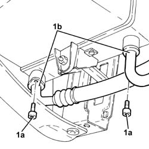
Applies to: engines: 2.4 JTD 20v; all production periods
1. Undo the nuts (1a) and disconnect the supply and return pipes to the engine oil heat exchanger (1b), oil filter mounting side.
2. Undo the bolt securing the bracket supporting the supply and return pipes to the engine oil heat exchanger to the power unit rigid support, timing gear side.
3. Remove the supply and return pipes to the engine oil heat exchanger.
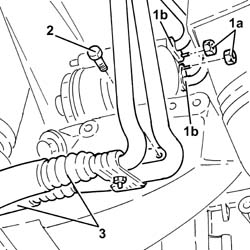
Applies to: engines: 2.4 JTD 20v; all production periods
Position a hydraulic jack under the engine.
1. Undo the bolt securing timing side rigid engine support to the flexible mounting.
2. Undo the bolts (2a) and remove the timing side rigid engine support (2b).
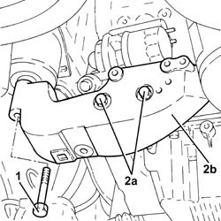
Applies to: engines: 2.4 JTD 20v; all production periods
Refitting
Removing1. Refit the timing side rigid engine support (1a) and secure it tightening the new bolts (1b) to the recommended torque.
| Fastening | Component | Ø | Value (daNm) |
|---|---|---|---|---|
1b | Bolt | ENGINE MOUNT TIMING SIDE | M10 | (Crankcase side) 4.5 ÷ 5.5 |
2. Tighten the bolt securing timing side rigid engine support to the flexible mounting to the recommended torque.
| Fastening | Component | Ø | Value (daNm) |
|---|---|---|---|---|
2 | Bolt | ENGINE MOUNT TIMING SIDE | M12 | (Flexible mounting side) 7.9 ÷ 9.7 |
Remove the hydraulic jack from under the engine.
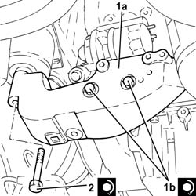
Applies to: engines: 2.4 JTD 20v; all production periods
Place the supply and return pipes to the engine oil heat exchanger in their seatings.
Tighten the bolt securing the bracket supporting the supply and return pipes to the engine oil heat exchanger to the power unit rigid support, timing gear side.
Connect the supply and return pipes to the engine oil heat exchanger, oil filter mounting side, and secure them with the nuts.
Connect the supply and return pipes to the engine oil heat exchanger, heat exchanger side, and secure them with their bolts.
Proceed with refitting 5040A26 compressor mount - r r .
Proceed with refitting 5040A20 air conditioner compressor - r+r - includes fluid level check and top up if necessary .
Refill the engine oil lubrication system - 0010T11 engine oil check level and top up .
Fill the air conditioner coolant system - 0010T84 coolant for air conditioning system dehydrate and recharge .
Remove the car from the ramps.
Topics linked from this page (10)
- 1092A10 Crankshaft services PULLEY - R.R.
- 1092A12 crankshaft pulley - r+r for versions with air conditioner
- 1092G10 single engine belt r r
- 4450B04 right front wheel r r
- 4450B10 Front WHEEL (one) - R.R.
- 5040A10 Air conditioning refrigerant CIRCUIT - Draining and Refilling
- 5040A20 air conditioner compressor - r+r - includes fluid level check and top up if necessary
- 5040A26 compressor mount - r r
- 7055B54 under-engine guard - r r
- 7055B64 Engine compartment DUST shield in front wheel arch (one), left or right - R.R.